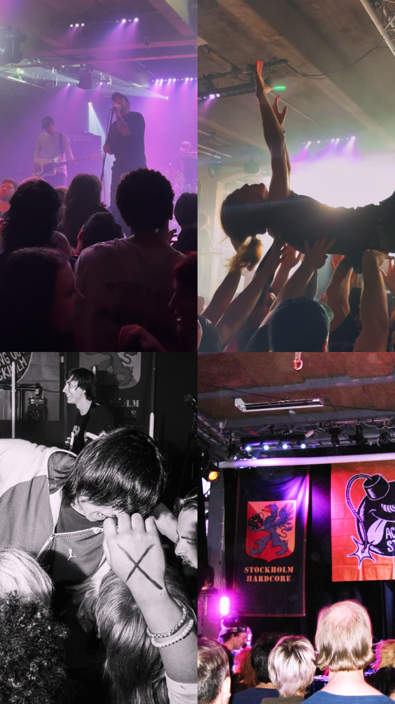

Stockholm Hardcore is a platform dedicated to documenting, promoting and celebrating the local hardcore punk scene.
The site brings together bands, fans and everyone involved in the community, offering interviews with local hardcore bands
and scene members, music recommendations, and coverage of upcoming shows and events.
Whether you're looking to discover new bands,
read about the people behind the music,
keep up with the local gig calendar or get a deeper insight
into the culture and community that make the scene what it is.